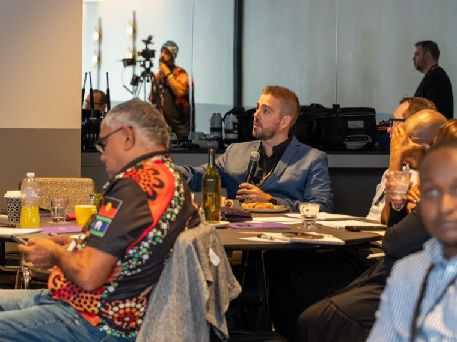

Referrals & Partnerships
The channel with no ad spend and the highest conversion rate.
A support coordinator who trusts you will refer three families before lunch
A Google ad might get you one click for $12. Both have their place, but if you are only paying for the ad and ignoring the relationship, you are buying attention you could be earning.
I help providers build, track and maintain the referral relationships that keep enquiries coming without a media budget behind them.
What I actually build
Support coordinators decide who gets the call
When a participant needs a new provider, the support coordinator is often the first person they ask. If your name comes up, you are on the shortlist before anyone searches Google. If it does not, your SEO and your ads are competing for a spot you could have had for free.
I help you build a system for staying in front of coordinators: who to contact, how often, what to send, and how to make it easy for them to recommend you. A coordinator who has met you, knows your team, and has a one-pager they can hand to a family is worth more than any campaign.

The people in the room before you are
Occupational therapists, social workers, physios, case managers. They sit with families at the worst moment and help them work out what comes next. If they know your name and trust your service, you are part of that conversation.
I help you identify the allied health professionals and hospital teams in your area, build a contact plan, and give them something useful to pass on. A referral from someone a family already trusts converts faster than anything you can buy.

Referrals dry up when you are hard to recommend
Someone wants to refer you. They go to your website and it does not clearly say what you do, where you operate, or who to call. Or they refer a family and nobody follows up for four days. Or the intake call feels like an interrogation rather than a conversation.
The referral is the start, not the finish. I review every step between "I know a good provider" and the family actually signing up, and fix the parts where people drop off.
If you do not know where your referrals come from, you cannot grow them
I set up simple tracking so you can see which coordinators, partners and channels are sending enquiries. Not a complex CRM. A clear view of who is referring, how often, and whether those referrals are converting.
Once you can see it, you can act on it: thank the people who refer, re-engage the ones who stopped, and put your time where it actually pays off.
Referrals are one half of growth. If you want them run alongside search, paid and content as one plan, that is Managed Growth.
Your best growth channel might already exist
You just need a system around it. The audit is free.